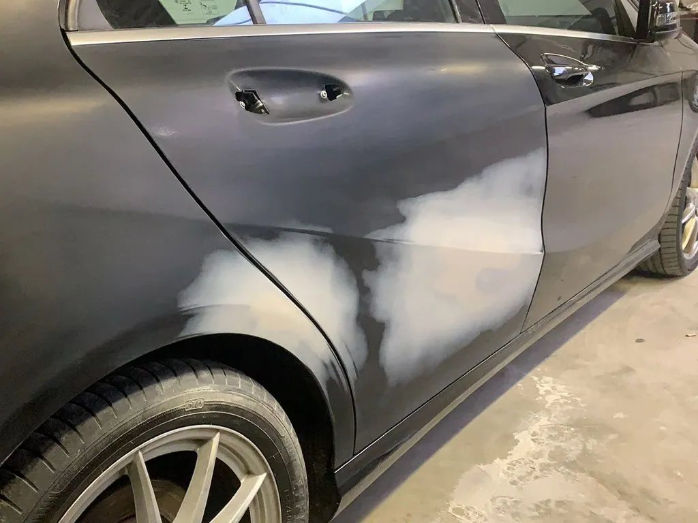
Express
Spot repair
Lichte krassen, steenslag of doffe plekken, terwijl je wacht en zonder afspraak.
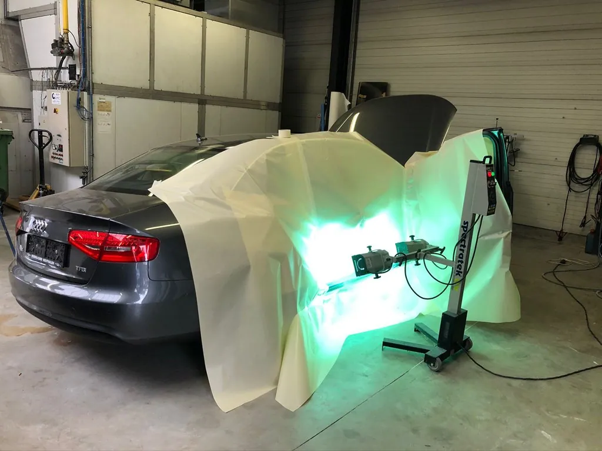
Krasje, deuk, steenslag of een velg tegen de stoeprand. Kleine schade herstellen we vaak terwijl je wacht. Grote schade pakken we aan met dezelfde precisie, voor alle merken, en we regelen het met je verzekering.
Tik op de plek op de wagen en zie meteen wat we doen, en of je er gewoon op kan wachten.
Een putje in je motorkap of een kleine beschadiging in de lak. Met spot repair herstellen we dat plaatselijk, zonder het hele deel opnieuw te spuiten. Vaak kan je er gewoon op wachten.
Kom langs of vraag offerteWe investeren voortdurend in nieuwe apparatuur, gereedschap en kennis. Zo krijg je het beste advies en een herstelling tegen een correcte prijs.

Lichte krassen, steenslag of doffe plekken, terwijl je wacht en zonder afspraak.
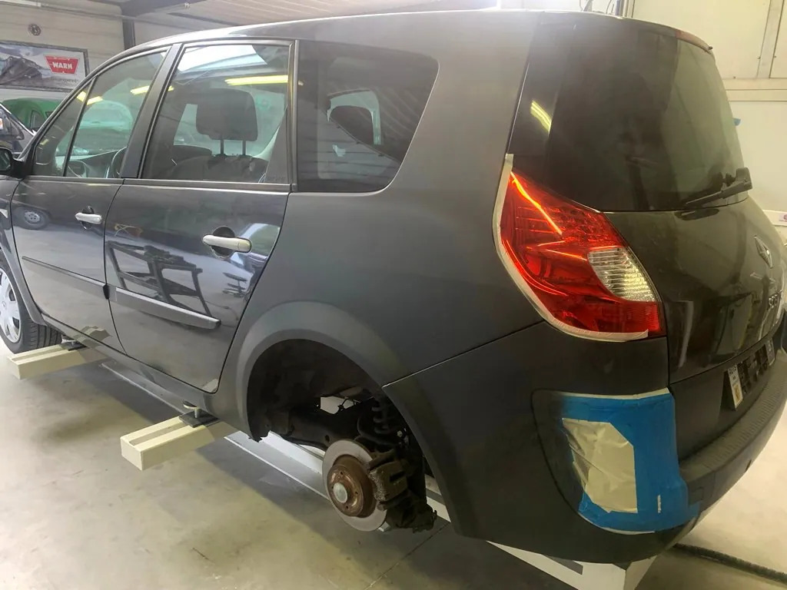
Een deuk, een scheur of een kras in je bumper. We herstellen alle soorten kunststof.
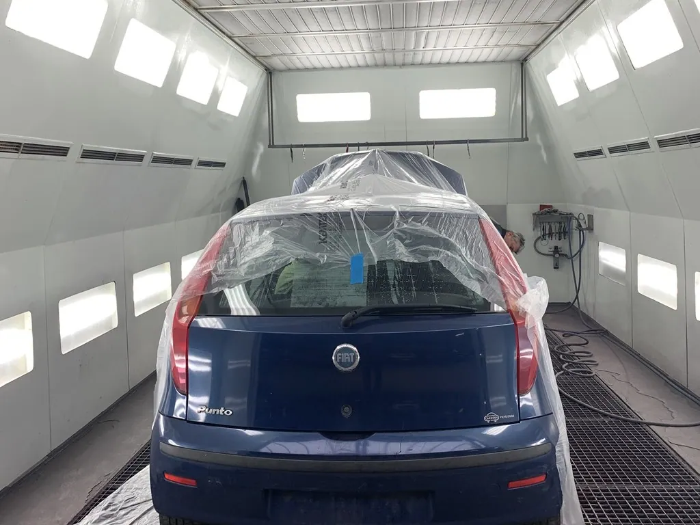
Verweerde of beschadigde lak? Na onze service krijgt je wagen zijn oude glans terug.
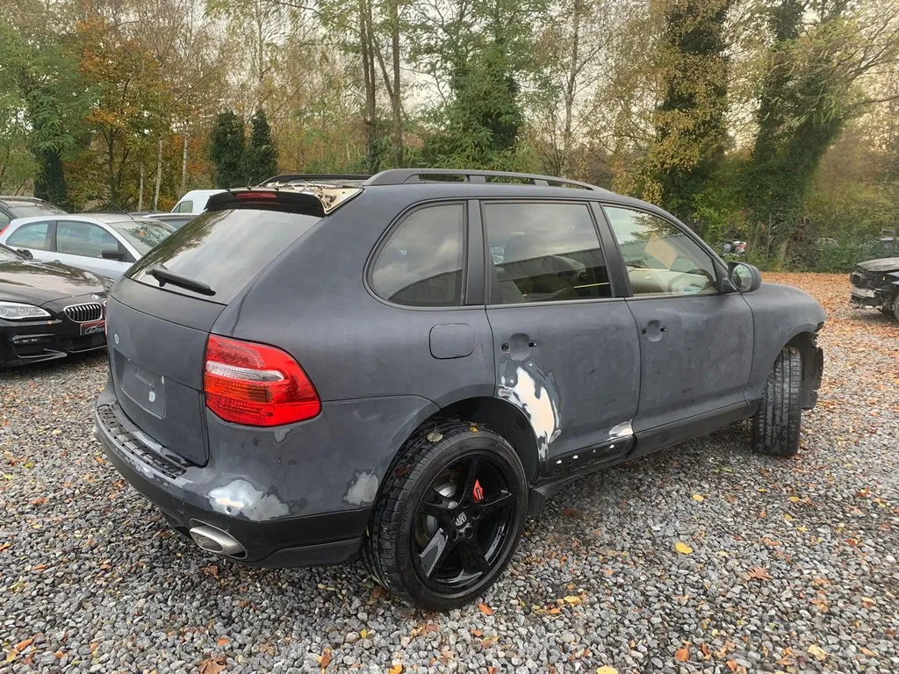
Met nieuwe technieken trekken we deukjes eruit, zonder dat er lakschade ontstaat.
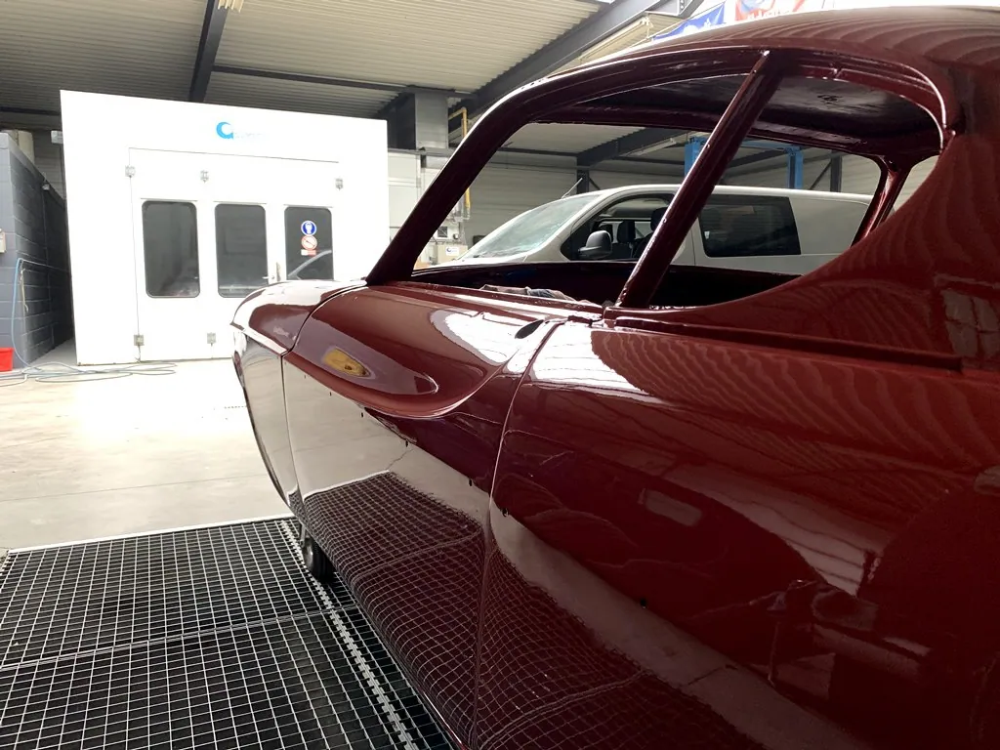
Swirls, doffe plekken en fijne krasjes verdwijnen met een polierbehandeling.
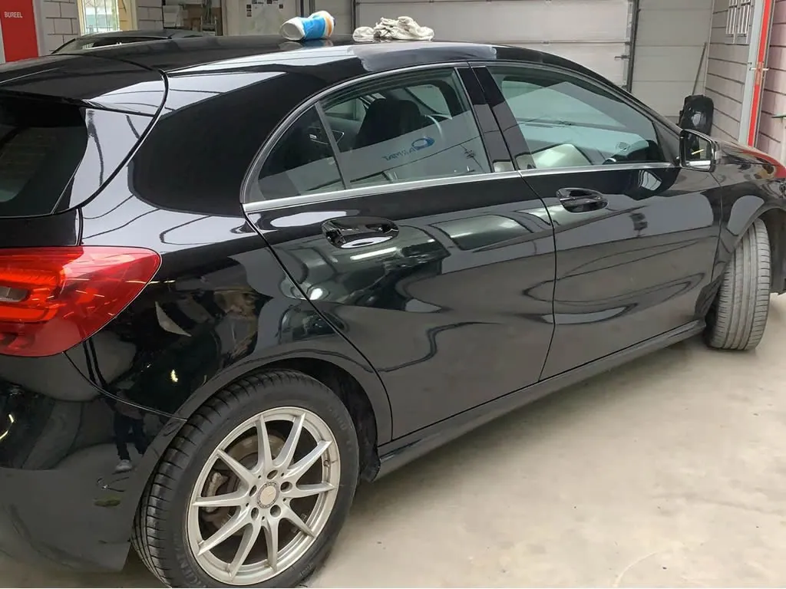
Terwijl je wacht herstellen en spuiten we je velgen opnieuw.
Elke herstelling volgt dezelfde zorgvuldige stappen. Hier een paar beelden rechtstreeks uit onze werkplaats in Genk.
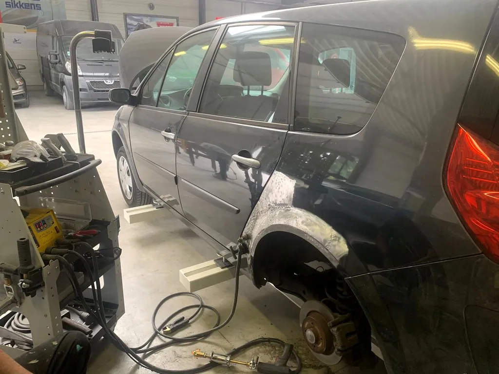
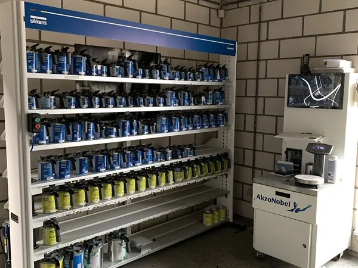
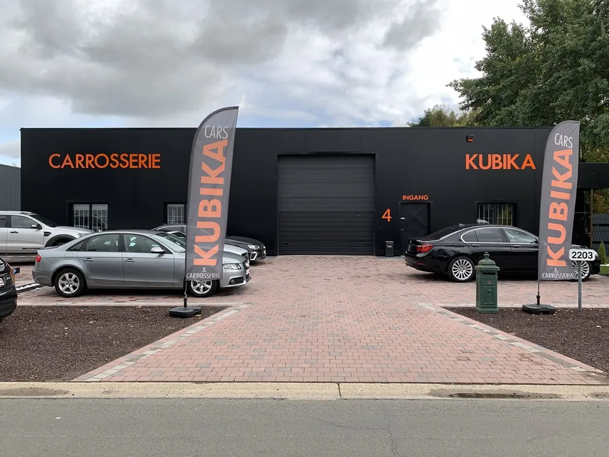
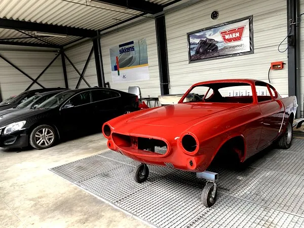
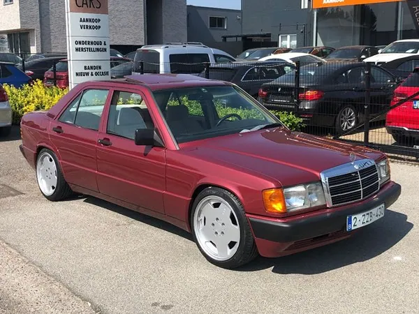
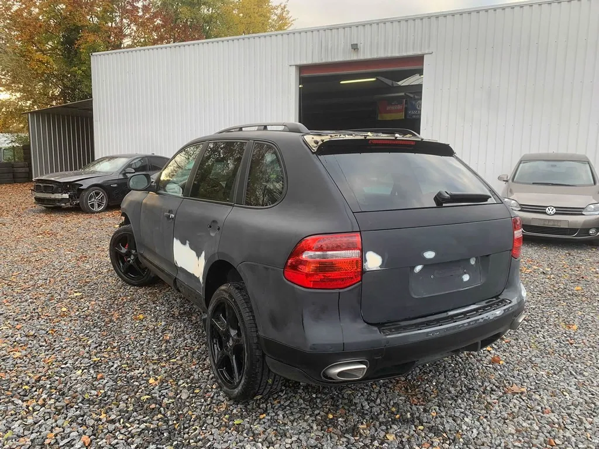
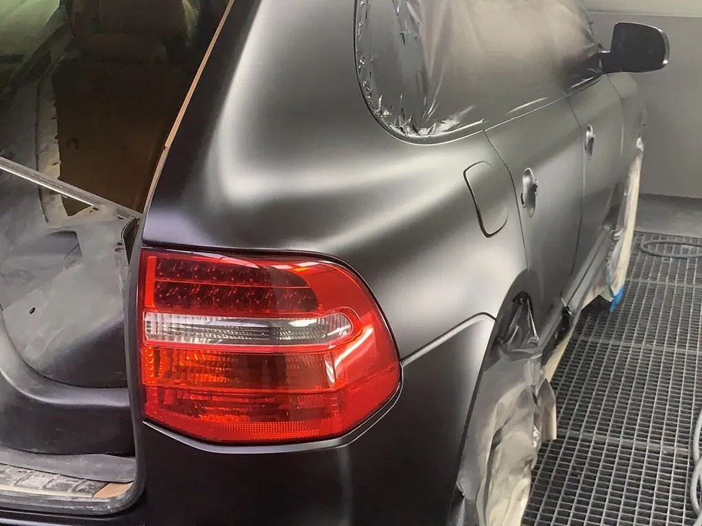
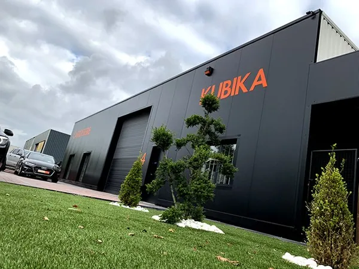
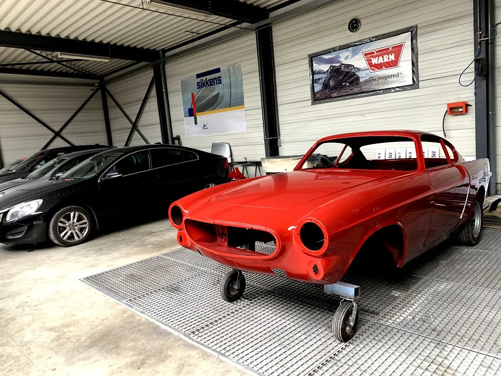
Kubika-Carrosserie startte in 2018 met één doel: elke herstelling perfect afwerken. Vandaag zijn we een vaste partner van verschillende grote verzekeringsmaatschappijen in België.
Vanaf het moment dat je wagen binnenrijdt, nemen wij het over. Je wordt op de hoogte gehouden van wanneer onderdelen binnenkomen en wat de expert zegt, tot je wagen er weer bij staat zoals hij hoort.
★★★★★“Herstelling BMW 520 na stormschade,perfect afgewerkt binnen afgesproken tijd en prijs! Een aanrader.”
★★★★★“Ik werd goed op de hoogte gehouden van de stand van zaken o.a. wanneer onderdelen geleverd werden, contact met expert, enzovoort.”
★★★★★“Zeer professioneel en correct, echte vakmensen . Uitmuntende kwaliteit en snel geholpen Een echte aanrader.. Dikke pluim”
Voor spot repair heb je geen afspraak nodig. Vaak kan je erop wachten.
| Maandag | 9:00 - 17:00 |
| Dinsdag | 9:00 - 17:00 |
| Woensdag | 9:00 - 17:00 |
| Donderdag | 9:00 - 17:00 |
| Vrijdag | 9:00 - 17:00 |
| Zaterdag | Gesloten |
| Zondag | Gesloten |
Een eerste schets, op maat van Kubika-Carrosserie. Jullie kiezen de stijl, ik zorg dat alles klopt.
één keer, alles inbegrepen
Geen voorschot. Je betaalt pas als de site klaar is.
Hosting en domein op jouw naam. Een aanpassing vraag je per keer aan.
Hosting en domein inbegrepen. Nieuwe acties, verlofdagen en wijzigingen zet ik er voor je op.
mijn aanraderStijn Vranken · 0496 25 14 45 · info@digital-impression.be